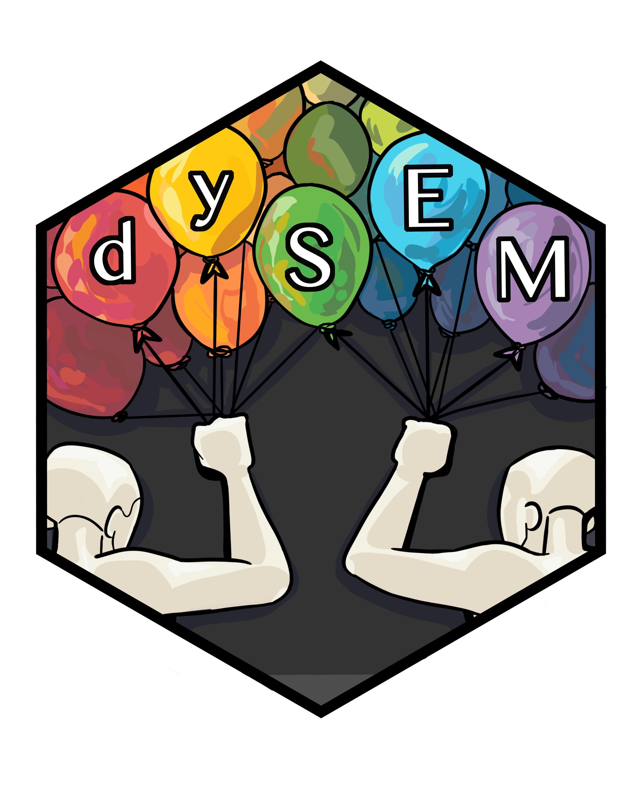

A Function That Writes, Saves, and Exports Syntax for Fitting the I-NULL model for indistinguishable dyads
Source:R/scriptINULL.R
scriptINULL.RdThis function takes the outputted object from scrapeVarCross() and automatically writes, returns, and exports (.txt) lavaan() syntax for the I-NULL model described in Olsen & Kenny (2006)
Arguments
- dvn
input dvn list from scrapeVarCross
- lvxname
input character to (arbitrarily) name X LV in lavaan syntax
- lvyname
(optional) input character to (arbitrarily) name Y LV in lavaan syntax
- writescript
input logical (default FALSE) for whether lavaan script should be concatenated and written to current working directory (in subdirectory "scripts")
See also
scrapeVarCross which this function relies on
Other script-writing functions:
scriptAPIM(),
scriptBiDy(),
scriptCFA(),
scriptCFM(),
scriptISAT(),
scriptMIM()
Examples
dvn <- scrapeVarCross(dat = DRES, x_order = "sip", x_stem = "PRQC", x_delim1 = "_",
x_delim2=".", x_item_num="\\d+", distinguish_1="1", distinguish_2="2")
qual.inull.script <- scriptINULL(dvn, lvxname = "Qual")